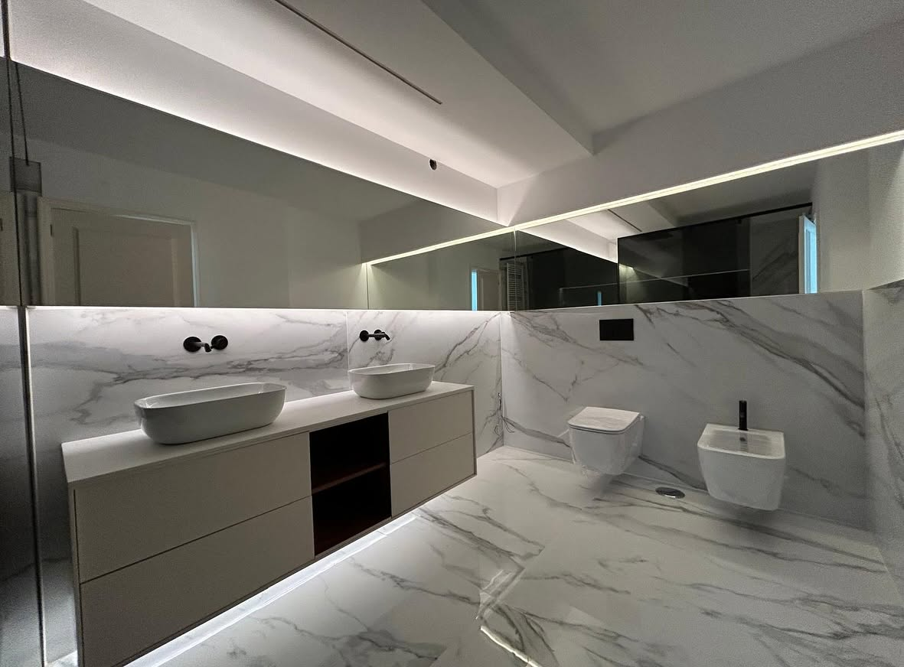
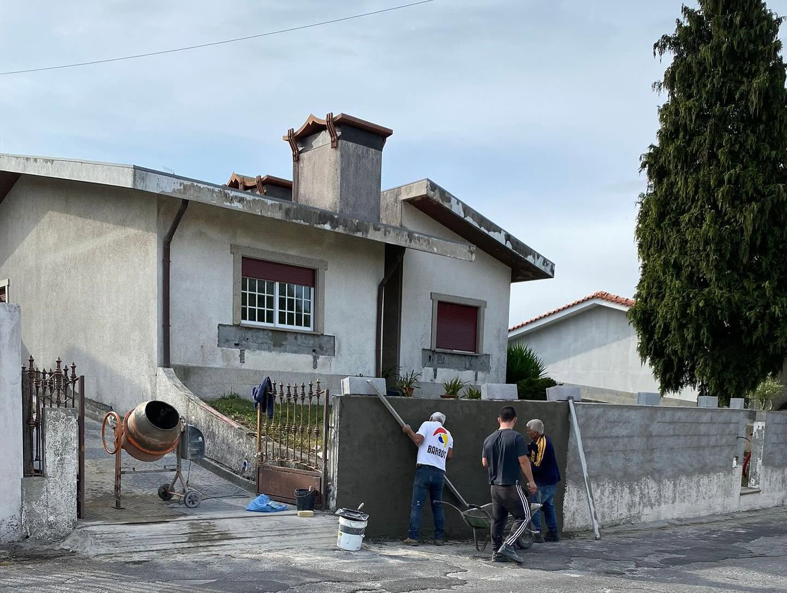

Remodelação
01 / 03
MR Construções
Casa de banho
Porto
MR Construções
Construímos com rigor.
Renovamos com propósito.
A MR Construções acompanha cada obra desde o primeiro contacto até à entrega final. Trabalhamos com proximidade, planeamento e atenção aos detalhes que fazem a diferença.
Falar connosco →Portfólio
Trabalhos realizados.
Alguns exemplos de intervenções desenvolvidas pela MR Construções.
Transformação
Antes e depois
Uma intervenção numa habitação em Famalicão, pensada para melhorar a imagem, o conforto e a utilização do espaço.
Arraste o controlo sobre a imagem para comparar.

Empresa e localização
Construção com presença local.
Empresa
Marco Paulo Ribeiro Unipessoal, Lda
Marca
MR Construções
Fundada em
2021
Rua do Casino nº 94 E
4765-063 Bairro, Vila Nova de Famalicão Abrir no Google Maps ↗
Serviços
Da ideia à entrega da obra.
Construção
Moradias, ampliações, estruturas e pequenas construções, com acompanhamento em todas as fases.
Remodelação
Renovação de casas, apartamentos, cozinhas, casas de banho e espaços comerciais.
Reparação
Intervenções em coberturas, fachadas, infiltrações, pinturas, canalização e manutenção.
Especialidades e Áreas de Atuação
Soluções completas para cada etapa do seu projeto
Construção Geral
Obras residenciais e comerciais de raiz, com planeamento e acompanhamento técnico rigoroso.
Pintura
Pinturas de interiores e exteriores, preparação minuciosa e revestimentos de elevada durabilidade.
Reabilitação
Recuperação e modernização de imóveis, preservando a identidade e valorizando o espaço construído.
Acabamentos
Pavimentos, revestimentos cerâmicos, tetos falsos, carpintarias e pormenores de alto padrão.
Alvenaria
Construção de paredes exteriores e interiores, muros de suporte, divisórias e assentamento preciso.
Fachadas e Isolamentos (Sistema ETICS)
Isolamento térmico pelo exterior (capoto), impermeabilização e máxima eficiência energética.
Telhados
Construção, reparação, substituição e impermeabilização integral de coberturas e caleiras.
Estrutura
Estruturas em betão armado, ferro e reforços estruturais com garantia total de solidez e segurança.
Execução Integral de Edifícios
Gestão e execução de obras "chave na mão", desde as fundações até aos acabamentos finais.
Contactos
Tem uma obra
em mente?
Fale connosco para analisar o seu projeto e pedir um orçamento.